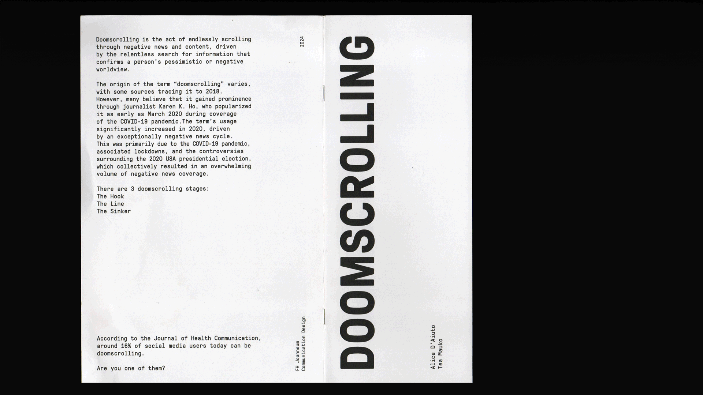
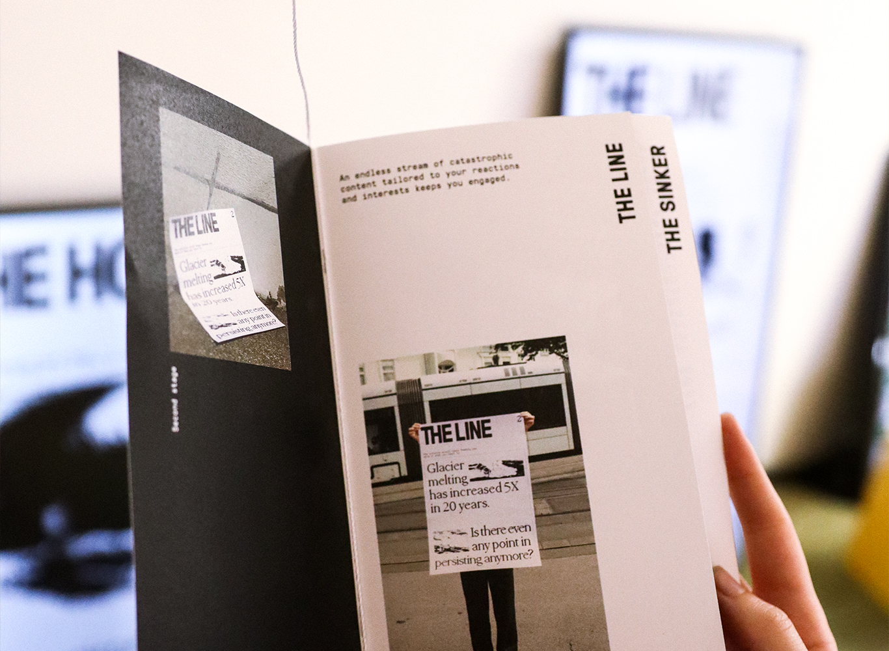

Doomscrolling Exhibition
Project Type
Exhibition for Animated Posters
Purpose
University Project
Software
Adobe After Effects, Adobe InDesign, Adobe Photoshop, Adobe Illustrator
Year
2024
Collaboration
Alice D’Aiuto
Problem and Solution
The task was to design animated posters on an important social issue. My colleague and I chose to focus on the anxiety surrounding the future. During our research, we came across the term 'doomscrolling,' which inspired us to create three posters, each representing a different stage of this behavior. Doomscrolling is the act of endlessly scrolling through social media posts with goal of finding catastrophical information that aligns with viewer’s negative view on the world. Our goal was to raise awareness of this problem by capturing the viewer's attention. The aesthetic is black and white because we wanted to have a big focus on the content.